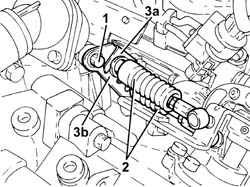
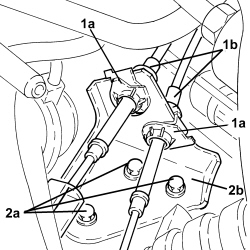
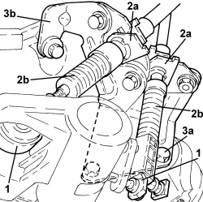

2125C31 GEAR SELECTION/ENGAGEMENT CABLES REACTION BRACKET - R.R.
- Path
- Procedures > 21 GEARBOX UNIT > 2125 MANUAL GEARBOX EXTERNAL CONTROLS - R.R. > 2125C MANUAL GEARBOX EXTERNAL CONTROL (CABLES) > 2125C31 GEAR SELECTION/ENGAGEMENT CABLES REACTION BRACKET - R.R.
- Kind
- repair procedure (removal / refitting; the operation number is the code)
- Applies to
- engines: 1.8, 2.2, 1.9 JTD 8v, 1.9 JTD 16v; all production periods
- Interactive page
- https://sloeber94.github.io/elrnDB-fCrm/en/#/194000458
Applies to: engines: 2.2; all production periods
 Removing
Removing
 Refitting
RefittingOp. 5530B52 BATTERY SUPPORT/DRIP TRAY - R.R
1. Undo the bolt fixing the gear selector-engagement cable mount.
2. Disconnect the gear selection and engagement cables from the gearbox.
3. Remove the retaining springs (3a) and remove the gear selection and engagement cable mount (3b) press-fitted to the pin on the gearbox.

Applies to: engines: 2.2; all production periods
Refitting
Removing- Fit the gear selection and engagement cable mount to the cables and secure with the retaining clips.
- Connect the gear selection and engagement cables to the gearbox.
- Tighten the bolt fixing the gear selector-engagement cable mount.
Applies to: engines: 1.9 JTD 8v, 1.9 JTD 16v; all production periods
Removing
RefittingOp. 5530B52 BATTERY SUPPORT/DRIP TRAY - R.R
1. Disconnect the gear selector cable.
2. Disconnect the gear engagement cable.

Applies to: engines: 1.9 JTD 8v, 1.9 JTD 16v; all production periods
1. Open the clips (1a) and release the gear selector and engagement cables (1b) from the mounting bracket.
2. Undo the bolts (2a) and remove the gear selection and engagement cable bracket (2b).

Applies to: engines: 1.9 JTD 8v, 1.9 JTD 16v; all production periods
Refitting
Removing- Refit the bracket with gear selection and engagement cables and secure with bolts.
- Fasten the gear selection and engagement cables to the mounting bracket securing them using the clips.
- Connect the gear engagement cable.
- Connect the gear selector cable.
Applies to: engines: 1.8; all production periods
Removing
RefittingOp. 5530B52 BATTERY SUPPORT/DRIP TRAY - R.R
1. Disconnect the gear selection and engagement flexible rods from the gearbox.
2. Working on the clips (2a) release the flexible gear selection and engagement rods (2b) from the reaction bracket.
3. Undo the fastenings (3a) and remove the bracket (3b).

Applies to: engines: 1.8; all production periods
Refitting
Removing- Place the reaction bracket in position and secure it to the gearbox tightening the fastenings.
- Introduce the two retaining clips for the cables in the openings in the reaction bracket and secure them exerting manual pressure until they are properly attached.
- Connect the ends to the spherical ends of the gear selection and engagement levers.